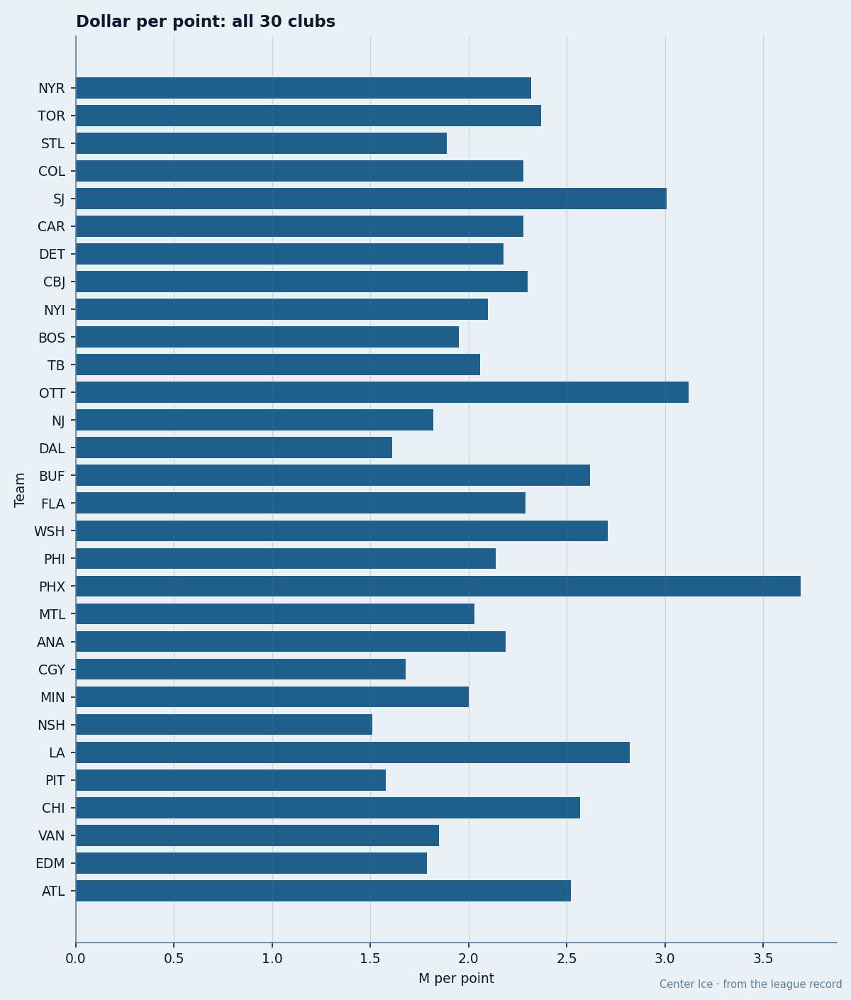
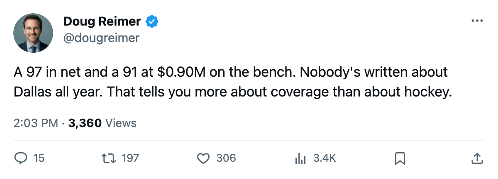
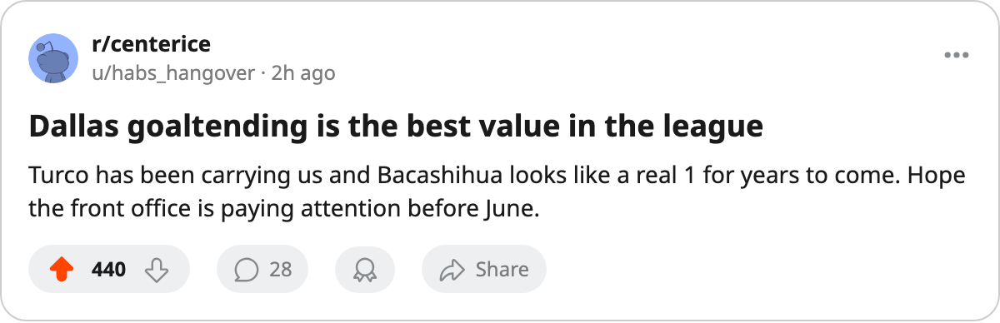

A 97 and a 91 on $1.50M: Dallas Has the League's Cheapest Goaltending Pair and the 2nd-Best Cost Per Point
Jason Bacashihua is +10 on the Development Index at $0.90M with 1 year left. Marty Turco is 97. Only Detroit fields two goaltenders above 90, and they cost $7.70M more.
 Doug ReimerAnalytics editor, ex-video coach · The Slot Report
Doug ReimerAnalytics editor, ex-video coach · The Slot Report
 Marty Turco93 sits 97 in the Bureau's Book, the highest-rated goaltender in hockey. Behind him, Jason Bacashihua87 has moved +10 on the Development Index, tied for the 5th-largest jump in the league, carrying a 91 overall at age 23 on a $0.90M salary with 1 year remaining. Their combined salary is $1.50M. Only one other club in hockey fields two goaltenders rated 91 or above, and that club pays $9.20M for the pair.
Marty Turco93 sits 97 in the Bureau's Book, the highest-rated goaltender in hockey. Behind him, Jason Bacashihua87 has moved +10 on the Development Index, tied for the 5th-largest jump in the league, carrying a 91 overall at age 23 on a $0.90M salary with 1 year remaining. Their combined salary is $1.50M. Only one other club in hockey fields two goaltenders rated 91 or above, and that club pays $9.20M for the pair.
The club carries a $58.02M payroll across 36 points for a cost of $1.61M a point, which is the 2nd-cheapest in the league behind Nashville's $1.51M. The two goaltenders cost $1.50M combined and carry a combined Book grade of 188. Detroit's pair of  Manny Legace91 at 91 and
Manny Legace91 at 91 and  Curtis Joseph91 at 91 costs $9.20M combined and carries a grade of 182. Dallas gets 6 more grade points for $7.70M less.
Curtis Joseph91 at 91 costs $9.20M combined and carries a grade of 182. Dallas gets 6 more grade points for $7.70M less.

The pair nobody else has
| Player | Club | Overall | Index move | GP | Salary | Years left | Morale |
|---|---|---|---|---|---|---|---|
| Jason Bacashihua |  Dallas Stars Dallas Stars | 91 | +10 | 5 | $0.90M | 1 | 94 |
| Manny Legace |  Detroit Red Wings Detroit Red Wings | 91 | — | 17 | $1.20M | 1 | 86 |
| Curtis Joseph | Detroit Red Wings | 91 | — | 7 | $8.00M | 1 | 96 |
Bacashihua's +10 carries risk. Five starts is a thin sample and the Index is a form measure, not a ceiling. His base was 80. A regression back to base would drop him 11 points. But even at base, a team holding an 80-rated goaltender at $0.90M with one year of control is not overpaying.
Turco has started 21 of Dallas Stars's 27 games (78%), Bacashihua has 5 (19%), and  Ron Tugnutt82 has 1 (4%). The club has played 27 games, more than any other in the league, and Turco has carried 78% of them.
Ron Tugnutt82 has 1 (4%). The club has played 27 games, more than any other in the league, and Turco has carried 78% of them.
What the pair costs the rest of the league
The only other club with two goaltenders at 91 or above is Detroit Red Wings. Legace is $1.20M with 1 year left, morale 86. Joseph is $8.00M with 1 year left, morale 96. Their combined goaltending salary is $9.20M against Dallas's $1.50M for a pair carrying 6 fewer grade points.
Dallas Stars's profit is $25.02M on $51.75M in revenue, with 16,912 in attendance at $82 a ticket. The franchise earns the 4th-most in hockey while spending the 14th-most. Bacashihua's $0.90M against a 91 overall is the cheapest point of goaltending talent in the league.
The June problem
Bacashihua enters the market on July 1 with a 91 overall, a +10 Index, and 23 years of age. His contract expires alongside Turco's, which means Dallas Stars faces a goaltending rebuild in the same summer it faces expiring deals at  Jason Arnott81 and
Jason Arnott81 and  Jere Lehtinen82, who carries an 86 overall at $2.50M.
Jere Lehtinen82, who carries an 86 overall at $2.50M.
The record shows a 5-game sample, a 91 overall, $0.90M in salary, and 1 year left. The 2nd-best cost per point in hockey depends on whether $0.90M buys another year of a man the Development Index says is 10 points above his base.

